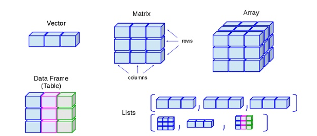

3 Basics on data manipulation in R

Figure 3.1: R console
You should think of R as an advance scientific calculator like the ones you used in high school. Basically, there is a set of basic functions already installed in R, which you can use with your data.
You can also install packages, which gives you access to additional functions.
Use Google to find what packages may have the functions you need. Say you want to do a genotypic analysis. Simply Google “R packages to do genotypic analysis”. If you want to do animations, search “how to do an animation in R”.
Variables
Variables in R are names used to storage objects that you can manipulate. For instance, let me create a variable “A”, whicha I want it to be the value 1. Basically, in the R console I type:
then click “Enter”. That command, just created a variable A, which has a value of 1.
To check, type “A” +“Enter”.
## [1] 1Let’s now create a variable called B, which is equal to 2.
I can now use those two variables to see what happens when I add them:
## [1] 3You cal also create a new variable based on other variables. For instance:
## [1] -1You can check all the variables you have created using the command ls()
## [1] "A" "B" "C" "i"
## [5] "MeanPopulation" "MeanSample" "Merge" "Population"
## [9] "Results" "Sample" "SampleSize" "trial"As you can see, up to this moment I have created three variables, named A, B and C.
You should try now. Open R in your computer or use the console below. The console below is exactly what you have in R in your computer. We will use this type of window in a few instances in this book, but I recommend you do your practices in your own computer.
Create a variable called D=10 and other called z=5, and calculate thhe difference between D and z.
Operators
Assignment operators
As you noted in my previous page, I used the equal sign (=) to assign a value to a letter variable; that is called an assignment operator. Another more broadly recommended assignment operator is >-, which is used like this:
Note that in the code above I use >- instead of =
I can verify this, by typing a in the R console and then hitting enter.
## [1] 10Arithmetic operators
R is preloaded with a lot of built-in mathematical operators. Here are some basic ones:
| Function | Description |
|---|---|
| + | Addition |
| - | Subtraction |
| * | Multiplication |
| / | Division |
| ^ | Exponent |
| log(x) | Natural log |
| log10(x) | Common log |
| abs(x) | Absolute value |
| sqrt(x) | Square root |
| ceiling(x) | Round to largest integer |
| floor(x) | Round to smallest integer |
| round(x, digits = 0) | Round number to given number of digits |
| rep(x, times = 1) | Repeat a number a given number of times |
| seq(from, to, by= ) | Create a sequence of numbers |
| sample(x,n,replace=T) | Select n random numbers from vector x |
Lets say I have a variable a=145.677, but I one to stimate the largest integer of that number, then
## [1] 146Give a try to some of these operators, yourself.
Any time you need an operator, but you do not know what is it in R, simply ask your friend Google. Say you want to calculate the cosine of a number?. Simply search in Google “How to calculate a cosine in R”.
Character operators
At times, you do not want to handle numbers but words. R also has functions for that.
| Function | Description |
|---|---|
| substr(x, start=n1, stop=n2) | Extract or replace substrings in a character vector |
| grep(pattern, x , ignore.case=FALSE, fixed=FALSE) | Search for pattern in x |
| sub(pattern, replacement, x, ignore.case =FALSE, fixed=FALSE) | Find pattern in x and replace with replacement text |
| strsplit(x, split) | Split the elements of character vector x at split |
| paste(…, sep=’’) | Concatenate strings |
Lets try a few examples:
a="camilo1989" #here I have a character variable, but want to remove that number, so
b=gsub("1989", "", a) #here I replace the value indicated in between the first quotations, for what is in between the second quotations, in this case nothing.
b## [1] "camilo"The function paste is another function that you will use a lot.
a="camilo" #here I have a character variable, that I want to concatenate with another one.
b="1989" #second variable.
c=paste(a,b,sep="_") #here I merge a and b, and separate them with an underscore
c## [1] "camilo_1989"If you want nothing to separate the words, put nothing between the brackets in sep, like this
## [1] "camilo1989"Custom made functions
As you become better at coding, you probably want to start creating your own functions. You can even create functions, that use other functions. Think of it like a lego game, in which you have thousands of functions (legos) that you can use to create whatever you want. Just as the Legos game, creating functions is very simple.
The structure of an R function is as follow:

- You have the name you want for your function
- What arguments are needed for your function
- Between {} you place what you want to do with your arguments
- Outline what you want to output from your function
Let’s have an example. Say, I have two numbers (12.78454 and 1.34893439), which I want to first multiple, then divide the result by 2, then estimate the cosine, then multiple by pi, then estimate the ceiling; and I want to do this four times with different starting numbers. So lets start coding this,
a=12.78454 #I place first number in a variable, so I do not have to retype all numbers
b=1.34893439 #same for second number
Multiple_AB=a*b #first command I have to do. Create new varaible multiplying a and b
Divide= Multiple_AB/2 #second command is to divide the output by 2
Cosine= cos(Divide) #third command is to estimate the cosine in the results
PI=Cosine*pi #four command is to multiply result by pi
Cealing=ceiling(PI) #finally, estimate the largest integer
Cealing #here is the result of that operation above## [1] -2If you see the code above, I wrote 8 lines of code to get the result for the first two set of numbers. If I want to do the same for say three other set of numbers, I will have to write 24 lines of code, not to mention the chance for error.
Since the general operation is same for all cases, you can simply create a function, which will reduce the lenght of the code, while ensuring you use exactly the same procedure for all numbers. Let’s do it,
CamilosFunction <- function(argument1, argument2) { #Argument 1 and 2, are the two numbers I have to run in my function
Multiple_AB=argument1*argument2 #first command I have to do
Divide= Multiple_AB/2 #second command is to divide the output by 2
Cosine= cos(Divide) #third command is to estimate the cosine in the results
PI=Cosine*pi #four command is to multiply result by pi
Cealing=ceiling(PI) #finally, estimate the largest integer
return (Cealing) #here is the result of that operation above
} If you see, all I did was to copy my entire process from the first set of values, and replace a and b, for the arguments in my function, add the {} and name my function. I just created a function, called CamilosFunction, that requires two values, to do the process indicated above, and return the result. Lets see,
a=12.78454
b=1.34893439
CamilosFunction (a, b) #here is my function, which run many commands and give me a single result.## [1] -2You can now reuse your function with different numbers, each time requiring only one line of code.
## [1] -2## [1] 3## [1] -1Create your own function now. In which you take three numbers (4,2,3), calculate their average, then multiple the result by 4, then estimate the sin, and finally calculate the square.
Data structure types
R provides numerous ways to hold data. Let’s check some of them.

Vectors
A vector is a collection of values. We call the individual values “elements” of the vector.
We can make vectors with c( ). c means “combine”. Say you have three numbers 1,4,5 and you just do not want to type them every time. you can then put the numbers in a vector.
## [1] 1 4 5You can also run operations in a vector. Lets use the example above, in which I want to multiply each value in that vector by 2.
a=c(1,4,5) #here create a variable that contains my vector of three numbers
a*2 #here I multiply my variable (vector with three numbers) by 2.## [1] 2 8 10Matrix
You can merge multiple vectors to create a matrix. You can merge the vectors by columns using the function cbind or by rows using the function rbind. Lets do an example to clarify.
Vector1=c(1,4,5) #here I have vector 1 with three numbers
Vector2=c(56,42,93) #here I have vector 2 with three numbers
ColumnMergedVector=cbind(Vector1,Vector2) #I use cbind to merge the vector by column
ColumnMergedVector## Vector1 Vector2
## [1,] 1 56
## [2,] 4 42
## [3,] 5 93See in the result above, how each vector became a column.
May be you prefer to merge them by rows
## [,1] [,2] [,3]
## Vector1 1 4 5
## Vector2 56 42 93You can now see how the two vectors were merged by rows.
DataFrames
Dataframes are the most common type of data structure in R. It is has similar topology to a matrix, but it is more diverse in the types of data it can use. Dataframes, are like the “Sheet” version in Excel. To create a dataframe you use the data.frame function. Lets do an example.
s
## Vector1 Vector2
## 1 1 56
## 2 4 42
## 3 5 93Dataframes also allow you to rename the column and row names, and there different ways to do that. Here is one,
colnames(DataFrame)=c("Height","Width") #Here I rename the two columsn in the dataframe, with the names used in a vector.
DataFrame## Height Width
## 1 1 56
## 2 4 42
## 3 5 93You are probably asking yourself what is the difference between a matrix and a data.frame?. Here are some differences:
| Matrix | Dataframe |
|---|---|
| Collection of data sets arranged in a two dimensional rectangular organisation | Stores data tables that contains multiple data types in multiple column called fields. |
| It’s m*n array with similar data type. | It is a list of vector of equal length. It is a generalized form of matrix. |
| It has fixed number of rows and columns. | It has variable number of rows and columns. |
| The data stored in columns can be only of same data type. | The data stored must be numeric, character or factor type. |
| Data types are homogeneous. | Data types are heterogeneous. |
Loading your own data into R
R also allows you to import your own data from a diversity of formats. Here we will use the most basic one, which is to import .csv files (the so-called comma delimited data). In this type of file, data are listed by rows, with the number between commas in a row indicating the columns.
To load a .csv file in R, you use the command read.csv(). Between brackets you put the path to where the file is located. You write that path between quotation. It sounds complicated, but it is simple. Let’s just try an example.
Create a folder in your local desktop called “Data”. It is good practice to keep your data and codes in separated folders that you can then easily identify by the name alone.
Download a csv file from here. Right click on the page and click on “Save page as” in the pop-up window. Name the file “Countries_GDP.csv”, and navigate to the “Data” folder you just created to save the file in there. Click “Save”. That file should now appear in your “Data” folder.
Now that you have the csv file in your local hard-drive, you can load it into R. For this you need to do a couple things. First, get the path to where the file is at. For this, click on your windows explorer (that is the button that looks like a folder in your desktop, see image below)

Figure 3.2: Windows explorer
Navigate to the folder Data where you saved the file, and put the mouse cursor in the selectable window (See arrow in image below). That will reveal the path where the file is saved in your computer.

Figure 3.3: Getting path to file
Next, right click on that same window, and click on Copy. That will copy the path to your file (See image below).

Figure 3.4: Getting path to file
Open R, right click anywhere inside the main window of R and click on “Paste”. It should look something like this:
Figure 3.5: Getting path to file
Now you need to replace each back-slash for a forward-slash in your path. The position of those keys in my keyboard are shown in the image below.

Figure 3.6: Slash keys in keyboard
So the path to the file should be change from this:
to this:
Now, to the path of the folder in which you have the file, you need to add the file name, like this:
I have to tell you that when I got started in R. A colleague sent me a file and told me to open his file in R. It sounded simple at the time, but it took me two days to figure out all these tiny things about setting the file correctly. Back in those days the internet was not so full of useful tutorials about how to do this. Ok, let’s keep going.
Now add to your path the R function that is used read csv files, which is “read.csv()”, like this:
I suggest you attach this file to a variable name, so you can call it later.
That is it, now you have loaded your data into R. Check it out by looking at the top part of the database
## country continent year gdpPercap
## 1 Afghanistan Asia 1952 779.4453
## 2 Afghanistan Asia 1957 820.8530
## 3 Afghanistan Asia 1962 853.1007
## 4 Afghanistan Asia 1967 836.1971
## 5 Afghanistan Asia 1972 739.9811
## 6 Afghanistan Asia 1977 786.1134By the way, if you know that the csv file in the web will not be deleted or moved, you can read the data from the web directly using the URL to the file, instead of the path. Like this,
Calling elements
Ok, now that you know how to store data in R. We need to learn how to see the data. To see a given data container, you can simply typeb its name and click enter. For instance,
## Height Width
## 1 1 56
## 2 4 42
## 3 5 93This is an ok way to see your data if the data container is not too big. However, if you have lots of data this command will fill up your screen. Instead, you can use the function head or tail, which will let you see the top five or the bottom five rows in a dataframe. Lets see.
Let me first create a medium size dataframe:
DataFrame<- data.frame( x1 = c(rep(1,250)), # in Column 1 I repeat the number 1 for 25 times
x2 = seq(1:250), #Column 2 I create a sequence of numbers from 1 to 25
x3 = sample(seq(1:1000),250)) # select 25 random numbers between 1 and 10000In the code above, I just create a dummy dataframe with three columns and 250 rows using functions we already described in the chapter on arithmetic operators.
If I try to see the full database, I just type the name of the dataframe and click enter. However, as you will notice calling the full dataframe will use a lot of your screen space because it will attempt to display all the data.
## x1 x2 x3
## 1 1 1 376
## 2 1 2 812
## 3 1 3 453
## 4 1 4 360
## 5 1 5 490
## 6 1 6 500
## 7 1 7 433
## 8 1 8 155
## 9 1 9 482
## 10 1 10 750
## 11 1 11 143
## 12 1 12 289
## 13 1 13 100
## 14 1 14 59
## 15 1 15 648
## 16 1 16 650
## 17 1 17 162
## 18 1 18 315
## 19 1 19 547
## 20 1 20 995
## 21 1 21 377
## 22 1 22 107
## 23 1 23 475
## 24 1 24 520
## 25 1 25 798
## 26 1 26 458
## 27 1 27 87
## 28 1 28 154
## 29 1 29 141
## 30 1 30 474
## 31 1 31 437
## 32 1 32 426
## 33 1 33 491
## 34 1 34 815
## 35 1 35 894
## 36 1 36 236
## 37 1 37 384
## 38 1 38 49
## 39 1 39 683
## 40 1 40 481
## 41 1 41 537
## 42 1 42 18
## 43 1 43 652
## 44 1 44 513
## 45 1 45 46
## 46 1 46 917
## 47 1 47 860
## 48 1 48 93
## 49 1 49 631
## 50 1 50 679
## 51 1 51 4
## 52 1 52 961
## 53 1 53 275
## 54 1 54 393
## 55 1 55 702
## 56 1 56 836
## 57 1 57 641
## 58 1 58 892
## 59 1 59 733
## 60 1 60 528
## 61 1 61 651
## 62 1 62 519
## 63 1 63 6
## 64 1 64 984
## 65 1 65 1
## 66 1 66 109
## 67 1 67 949
## 68 1 68 832
## 69 1 69 137
## 70 1 70 260
## 71 1 71 211
## 72 1 72 404
## 73 1 73 379
## 74 1 74 904
## 75 1 75 381
## 76 1 76 189
## 77 1 77 975
## 78 1 78 181
## 79 1 79 200
## 80 1 80 290
## 81 1 81 606
## 82 1 82 596
## 83 1 83 726
## 84 1 84 185
## 85 1 85 915
## 86 1 86 868
## 87 1 87 953
## 88 1 88 104
## 89 1 89 424
## 90 1 90 135
## 91 1 91 703
## 92 1 92 575
## 93 1 93 561
## 94 1 94 385
## 95 1 95 610
## 96 1 96 722
## 97 1 97 992
## 98 1 98 793
## 99 1 99 238
## 100 1 100 174
## 101 1 101 234
## 102 1 102 331
## 103 1 103 66
## 104 1 104 418
## 105 1 105 497
## 106 1 106 344
## 107 1 107 687
## 108 1 108 122
## 109 1 109 794
## 110 1 110 884
## 111 1 111 283
## 112 1 112 536
## 113 1 113 61
## 114 1 114 423
## 115 1 115 362
## 116 1 116 584
## 117 1 117 643
## 118 1 118 644
## 119 1 119 725
## 120 1 120 317
## 121 1 121 82
## 122 1 122 865
## 123 1 123 64
## 124 1 124 553
## 125 1 125 515
## 126 1 126 382
## 127 1 127 494
## 128 1 128 821
## 129 1 129 544
## 130 1 130 911
## 131 1 131 54
## 132 1 132 931
## 133 1 133 225
## 134 1 134 170
## 135 1 135 955
## 136 1 136 358
## 137 1 137 889
## 138 1 138 177
## 139 1 139 863
## 140 1 140 231
## 141 1 141 81
## 142 1 142 807
## 143 1 143 685
## 144 1 144 634
## 145 1 145 677
## 146 1 146 665
## 147 1 147 658
## 148 1 148 365
## 149 1 149 670
## 150 1 150 405
## 151 1 151 442
## 152 1 152 452
## 153 1 153 609
## 154 1 154 858
## 155 1 155 943
## 156 1 156 448
## 157 1 157 960
## 158 1 158 655
## 159 1 159 532
## 160 1 160 136
## 161 1 161 981
## 162 1 162 444
## 163 1 163 476
## 164 1 164 33
## 165 1 165 288
## 166 1 166 842
## 167 1 167 897
## 168 1 168 817
## 169 1 169 435
## 170 1 170 867
## 171 1 171 79
## 172 1 172 712
## 173 1 173 421
## 174 1 174 876
## 175 1 175 741
## 176 1 176 443
## 177 1 177 582
## 178 1 178 332
## 179 1 179 264
## 180 1 180 616
## 181 1 181 514
## 182 1 182 663
## 183 1 183 11
## 184 1 184 327
## 185 1 185 67
## 186 1 186 538
## 187 1 187 804
## 188 1 188 158
## 189 1 189 859
## 190 1 190 721
## 191 1 191 187
## 192 1 192 350
## 193 1 193 720
## 194 1 194 408
## 195 1 195 470
## 196 1 196 617
## 197 1 197 619
## 198 1 198 280
## 199 1 199 220
## 200 1 200 85
## 201 1 201 937
## 202 1 202 756
## 203 1 203 261
## 204 1 204 116
## 205 1 205 898
## 206 1 206 99
## 207 1 207 673
## 208 1 208 394
## 209 1 209 39
## 210 1 210 769
## 211 1 211 113
## 212 1 212 716
## 213 1 213 839
## 214 1 214 765
## 215 1 215 325
## 216 1 216 738
## 217 1 217 228
## 218 1 218 72
## 219 1 219 179
## 220 1 220 709
## 221 1 221 808
## 222 1 222 835
## 223 1 223 566
## 224 1 224 521
## 225 1 225 959
## 226 1 226 699
## 227 1 227 778
## 228 1 228 893
## 229 1 229 830
## 230 1 230 337
## 231 1 231 516
## 232 1 232 249
## 233 1 233 731
## 234 1 234 272
## 235 1 235 397
## 236 1 236 420
## 237 1 237 603
## 238 1 238 20
## 239 1 239 647
## 240 1 240 192
## 241 1 241 186
## 242 1 242 44
## 243 1 243 42
## 244 1 244 978
## 245 1 245 237
## 246 1 246 222
## 247 1 247 173
## 248 1 248 569
## 249 1 249 668
## 250 1 250 406Head
Alternatively, you can just check the top rows using the head function. Like this:
## x1 x2 x3
## 1 1 1 376
## 2 1 2 812
## 3 1 3 453
## 4 1 4 360
## 5 1 5 490
## 6 1 6 500Tail
Or the bottom rows using the tail function. Like this:
## x1 x2 x3
## 245 1 245 237
## 246 1 246 222
## 247 1 247 173
## 248 1 248 569
## 249 1 249 668
## 250 1 250 406Index
You can also check specific elements of the dataframe using the index function, which in R is indicated with the square brackets [row,column]. The number to the left of the comma will be the row number, and the number to the right the column number. If you do not add a number, it will display all columns or all rows. For instance, check what number is in column 3 in the 2th row?
## [1] 812Filter data
A recurring task in data analytics is to filter data, this means to select specific subsets/chucks of your data. Filters can be used to create new variables, to apply new functions, to see specific data, etc. There are numerous ways to filter data in R, but here we wall use the function filter in the package “dplyr”.
# install.packages("dplyr") #First, I install the package dplyr, since I have not installed it previously
library(dplyr) #next I load the package into the current section of R.Now, lets check the first few rows in the GDP database we loaded earlier,
## country continent year gdpPercap
## 1699 Zimbabwe Africa 1982 788.8550
## 1700 Zimbabwe Africa 1987 706.1573
## 1701 Zimbabwe Africa 1992 693.4208
## 1702 Zimbabwe Africa 1997 792.4500
## 1703 Zimbabwe Africa 2002 672.0386
## 1704 Zimbabwe Africa 2007 469.7093From the subset of the data above, you can see that the GDPData database has four columns, and from the “year” column, you can tell that the data of GDP (gdpPercap) is repeated for each year. Hmm, but what if I just want to see the data for countries in Asia?. For that we use the function filter.
The syntax of the filter function reads like this:
Figure 3.7: Filter function
Now that you know the syntax of the filter function from the dplr package, lets test it.
## country continent year gdpPercap
## 1 Afghanistan Asia 1952 779.4453
## 2 Afghanistan Asia 1957 820.8530
## 3 Afghanistan Asia 1962 853.1007
## 4 Afghanistan Asia 1967 836.1971
## 5 Afghanistan Asia 1972 739.9811
## 6 Afghanistan Asia 1977 786.1134
## 7 Afghanistan Asia 1982 978.0114
## 8 Afghanistan Asia 1987 852.3959
## 9 Afghanistan Asia 1992 649.3414
## 10 Afghanistan Asia 1997 635.3414
## 11 Afghanistan Asia 2002 726.7341
## 12 Afghanistan Asia 2007 974.5803
## 13 Bahrain Asia 1952 9867.0848
## 14 Bahrain Asia 1957 11635.7995
## 15 Bahrain Asia 1962 12753.2751
## 16 Bahrain Asia 1967 14804.6727
## 17 Bahrain Asia 1972 18268.6584
## 18 Bahrain Asia 1977 19340.1020
## 19 Bahrain Asia 1982 19211.1473
## 20 Bahrain Asia 1987 18524.0241
## 21 Bahrain Asia 1992 19035.5792
## 22 Bahrain Asia 1997 20292.0168
## 23 Bahrain Asia 2002 23403.5593
## 24 Bahrain Asia 2007 29796.0483
## 25 Bangladesh Asia 1952 684.2442
## 26 Bangladesh Asia 1957 661.6375
## 27 Bangladesh Asia 1962 686.3416
## 28 Bangladesh Asia 1967 721.1861
## 29 Bangladesh Asia 1972 630.2336
## 30 Bangladesh Asia 1977 659.8772
## 31 Bangladesh Asia 1982 676.9819
## 32 Bangladesh Asia 1987 751.9794
## 33 Bangladesh Asia 1992 837.8102
## 34 Bangladesh Asia 1997 972.7700
## 35 Bangladesh Asia 2002 1136.3904
## 36 Bangladesh Asia 2007 1391.2538
## 37 Cambodia Asia 1952 368.4693
## 38 Cambodia Asia 1957 434.0383
## 39 Cambodia Asia 1962 496.9136
## 40 Cambodia Asia 1967 523.4323
## 41 Cambodia Asia 1972 421.6240
## 42 Cambodia Asia 1977 524.9722
## 43 Cambodia Asia 1982 624.4755
## 44 Cambodia Asia 1987 683.8956
## 45 Cambodia Asia 1992 682.3032
## 46 Cambodia Asia 1997 734.2852
## 47 Cambodia Asia 2002 896.2260
## 48 Cambodia Asia 2007 1713.7787
## 49 China Asia 1952 400.4486
## 50 China Asia 1957 575.9870
## 51 China Asia 1962 487.6740
## 52 China Asia 1967 612.7057
## 53 China Asia 1972 676.9001
## 54 China Asia 1977 741.2375
## 55 China Asia 1982 962.4214
## 56 China Asia 1987 1378.9040
## 57 China Asia 1992 1655.7842
## 58 China Asia 1997 2289.2341
## 59 China Asia 2002 3119.2809
## 60 China Asia 2007 4959.1149
## 61 Hong Kong, China Asia 1952 3054.4212
## 62 Hong Kong, China Asia 1957 3629.0765
## 63 Hong Kong, China Asia 1962 4692.6483
## 64 Hong Kong, China Asia 1967 6197.9628
## 65 Hong Kong, China Asia 1972 8315.9281
## 66 Hong Kong, China Asia 1977 11186.1413
## 67 Hong Kong, China Asia 1982 14560.5305
## 68 Hong Kong, China Asia 1987 20038.4727
## 69 Hong Kong, China Asia 1992 24757.6030
## 70 Hong Kong, China Asia 1997 28377.6322
## 71 Hong Kong, China Asia 2002 30209.0152
## 72 Hong Kong, China Asia 2007 39724.9787
## 73 India Asia 1952 546.5657
## 74 India Asia 1957 590.0620
## 75 India Asia 1962 658.3472
## 76 India Asia 1967 700.7706
## 77 India Asia 1972 724.0325
## 78 India Asia 1977 813.3373
## 79 India Asia 1982 855.7235
## 80 India Asia 1987 976.5127
## 81 India Asia 1992 1164.4068
## 82 India Asia 1997 1458.8174
## 83 India Asia 2002 1746.7695
## 84 India Asia 2007 2452.2104
## 85 Indonesia Asia 1952 749.6817
## 86 Indonesia Asia 1957 858.9003
## 87 Indonesia Asia 1962 849.2898
## 88 Indonesia Asia 1967 762.4318
## 89 Indonesia Asia 1972 1111.1079
## 90 Indonesia Asia 1977 1382.7021
## 91 Indonesia Asia 1982 1516.8730
## 92 Indonesia Asia 1987 1748.3570
## 93 Indonesia Asia 1992 2383.1409
## 94 Indonesia Asia 1997 3119.3356
## 95 Indonesia Asia 2002 2873.9129
## 96 Indonesia Asia 2007 3540.6516
## 97 Iran Asia 1952 3035.3260
## 98 Iran Asia 1957 3290.2576
## 99 Iran Asia 1962 4187.3298
## 100 Iran Asia 1967 5906.7318
## 101 Iran Asia 1972 9613.8186
## 102 Iran Asia 1977 11888.5951
## 103 Iran Asia 1982 7608.3346
## 104 Iran Asia 1987 6642.8814
## 105 Iran Asia 1992 7235.6532
## 106 Iran Asia 1997 8263.5903
## 107 Iran Asia 2002 9240.7620
## 108 Iran Asia 2007 11605.7145
## 109 Iraq Asia 1952 4129.7661
## 110 Iraq Asia 1957 6229.3336
## 111 Iraq Asia 1962 8341.7378
## 112 Iraq Asia 1967 8931.4598
## 113 Iraq Asia 1972 9576.0376
## 114 Iraq Asia 1977 14688.2351
## 115 Iraq Asia 1982 14517.9071
## 116 Iraq Asia 1987 11643.5727
## 117 Iraq Asia 1992 3745.6407
## 118 Iraq Asia 1997 3076.2398
## 119 Iraq Asia 2002 4390.7173
## 120 Iraq Asia 2007 4471.0619
## 121 Israel Asia 1952 4086.5221
## 122 Israel Asia 1957 5385.2785
## 123 Israel Asia 1962 7105.6307
## 124 Israel Asia 1967 8393.7414
## 125 Israel Asia 1972 12786.9322
## 126 Israel Asia 1977 13306.6192
## 127 Israel Asia 1982 15367.0292
## 128 Israel Asia 1987 17122.4799
## 129 Israel Asia 1992 18051.5225
## 130 Israel Asia 1997 20896.6092
## 131 Israel Asia 2002 21905.5951
## 132 Israel Asia 2007 25523.2771
## 133 Japan Asia 1952 3216.9563
## 134 Japan Asia 1957 4317.6944
## 135 Japan Asia 1962 6576.6495
## 136 Japan Asia 1967 9847.7886
## 137 Japan Asia 1972 14778.7864
## 138 Japan Asia 1977 16610.3770
## 139 Japan Asia 1982 19384.1057
## 140 Japan Asia 1987 22375.9419
## 141 Japan Asia 1992 26824.8951
## 142 Japan Asia 1997 28816.5850
## 143 Japan Asia 2002 28604.5919
## 144 Japan Asia 2007 31656.0681
## 145 Jordan Asia 1952 1546.9078
## 146 Jordan Asia 1957 1886.0806
## 147 Jordan Asia 1962 2348.0092
## 148 Jordan Asia 1967 2741.7963
## 149 Jordan Asia 1972 2110.8563
## 150 Jordan Asia 1977 2852.3516
## 151 Jordan Asia 1982 4161.4160
## 152 Jordan Asia 1987 4448.6799
## 153 Jordan Asia 1992 3431.5936
## 154 Jordan Asia 1997 3645.3796
## 155 Jordan Asia 2002 3844.9172
## 156 Jordan Asia 2007 4519.4612
## 157 Korea, Dem. Rep. Asia 1952 1088.2778
## 158 Korea, Dem. Rep. Asia 1957 1571.1347
## 159 Korea, Dem. Rep. Asia 1962 1621.6936
## 160 Korea, Dem. Rep. Asia 1967 2143.5406
## 161 Korea, Dem. Rep. Asia 1972 3701.6215
## 162 Korea, Dem. Rep. Asia 1977 4106.3012
## 163 Korea, Dem. Rep. Asia 1982 4106.5253
## 164 Korea, Dem. Rep. Asia 1987 4106.4923
## 165 Korea, Dem. Rep. Asia 1992 3726.0635
## 166 Korea, Dem. Rep. Asia 1997 1690.7568
## 167 Korea, Dem. Rep. Asia 2002 1646.7582
## 168 Korea, Dem. Rep. Asia 2007 1593.0655
## 169 Korea, Rep. Asia 1952 1030.5922
## 170 Korea, Rep. Asia 1957 1487.5935
## 171 Korea, Rep. Asia 1962 1536.3444
## 172 Korea, Rep. Asia 1967 2029.2281
## 173 Korea, Rep. Asia 1972 3030.8767
## 174 Korea, Rep. Asia 1977 4657.2210
## 175 Korea, Rep. Asia 1982 5622.9425
## 176 Korea, Rep. Asia 1987 8533.0888
## 177 Korea, Rep. Asia 1992 12104.2787
## 178 Korea, Rep. Asia 1997 15993.5280
## 179 Korea, Rep. Asia 2002 19233.9882
## 180 Korea, Rep. Asia 2007 23348.1397
## 181 Kuwait Asia 1952 108382.3529
## 182 Kuwait Asia 1957 113523.1329
## 183 Kuwait Asia 1962 95458.1118
## 184 Kuwait Asia 1967 80894.8833
## 185 Kuwait Asia 1972 109347.8670
## 186 Kuwait Asia 1977 59265.4771
## 187 Kuwait Asia 1982 31354.0357
## 188 Kuwait Asia 1987 28118.4300
## 189 Kuwait Asia 1992 34932.9196
## 190 Kuwait Asia 1997 40300.6200
## 191 Kuwait Asia 2002 35110.1057
## 192 Kuwait Asia 2007 47306.9898
## 193 Lebanon Asia 1952 4834.8041
## 194 Lebanon Asia 1957 6089.7869
## 195 Lebanon Asia 1962 5714.5606
## 196 Lebanon Asia 1967 6006.9830
## 197 Lebanon Asia 1972 7486.3843
## 198 Lebanon Asia 1977 8659.6968
## 199 Lebanon Asia 1982 7640.5195
## 200 Lebanon Asia 1987 5377.0913
## 201 Lebanon Asia 1992 6890.8069
## 202 Lebanon Asia 1997 8754.9639
## 203 Lebanon Asia 2002 9313.9388
## 204 Lebanon Asia 2007 10461.0587
## 205 Malaysia Asia 1952 1831.1329
## 206 Malaysia Asia 1957 1810.0670
## 207 Malaysia Asia 1962 2036.8849
## 208 Malaysia Asia 1967 2277.7424
## 209 Malaysia Asia 1972 2849.0948
## 210 Malaysia Asia 1977 3827.9216
## 211 Malaysia Asia 1982 4920.3560
## 212 Malaysia Asia 1987 5249.8027
## 213 Malaysia Asia 1992 7277.9128
## 214 Malaysia Asia 1997 10132.9096
## 215 Malaysia Asia 2002 10206.9779
## 216 Malaysia Asia 2007 12451.6558
## 217 Mongolia Asia 1952 786.5669
## 218 Mongolia Asia 1957 912.6626
## 219 Mongolia Asia 1962 1056.3540
## 220 Mongolia Asia 1967 1226.0411
## 221 Mongolia Asia 1972 1421.7420
## 222 Mongolia Asia 1977 1647.5117
## 223 Mongolia Asia 1982 2000.6031
## 224 Mongolia Asia 1987 2338.0083
## 225 Mongolia Asia 1992 1785.4020
## 226 Mongolia Asia 1997 1902.2521
## 227 Mongolia Asia 2002 2140.7393
## 228 Mongolia Asia 2007 3095.7723
## 229 Myanmar Asia 1952 331.0000
## 230 Myanmar Asia 1957 350.0000
## 231 Myanmar Asia 1962 388.0000
## 232 Myanmar Asia 1967 349.0000
## 233 Myanmar Asia 1972 357.0000
## 234 Myanmar Asia 1977 371.0000
## 235 Myanmar Asia 1982 424.0000
## 236 Myanmar Asia 1987 385.0000
## 237 Myanmar Asia 1992 347.0000
## 238 Myanmar Asia 1997 415.0000
## 239 Myanmar Asia 2002 611.0000
## 240 Myanmar Asia 2007 944.0000
## 241 Nepal Asia 1952 545.8657
## 242 Nepal Asia 1957 597.9364
## 243 Nepal Asia 1962 652.3969
## 244 Nepal Asia 1967 676.4422
## 245 Nepal Asia 1972 674.7881
## 246 Nepal Asia 1977 694.1124
## 247 Nepal Asia 1982 718.3731
## 248 Nepal Asia 1987 775.6325
## 249 Nepal Asia 1992 897.7404
## 250 Nepal Asia 1997 1010.8921
## 251 Nepal Asia 2002 1057.2063
## 252 Nepal Asia 2007 1091.3598
## 253 Oman Asia 1952 1828.2303
## 254 Oman Asia 1957 2242.7466
## 255 Oman Asia 1962 2924.6381
## 256 Oman Asia 1967 4720.9427
## 257 Oman Asia 1972 10618.0385
## 258 Oman Asia 1977 11848.3439
## 259 Oman Asia 1982 12954.7910
## 260 Oman Asia 1987 18115.2231
## 261 Oman Asia 1992 18616.7069
## 262 Oman Asia 1997 19702.0558
## 263 Oman Asia 2002 19774.8369
## 264 Oman Asia 2007 22316.1929
## 265 Pakistan Asia 1952 684.5971
## 266 Pakistan Asia 1957 747.0835
## 267 Pakistan Asia 1962 803.3427
## 268 Pakistan Asia 1967 942.4083
## 269 Pakistan Asia 1972 1049.9390
## 270 Pakistan Asia 1977 1175.9212
## 271 Pakistan Asia 1982 1443.4298
## 272 Pakistan Asia 1987 1704.6866
## 273 Pakistan Asia 1992 1971.8295
## 274 Pakistan Asia 1997 2049.3505
## 275 Pakistan Asia 2002 2092.7124
## 276 Pakistan Asia 2007 2605.9476
## 277 Philippines Asia 1952 1272.8810
## 278 Philippines Asia 1957 1547.9448
## 279 Philippines Asia 1962 1649.5522
## 280 Philippines Asia 1967 1814.1274
## 281 Philippines Asia 1972 1989.3741
## 282 Philippines Asia 1977 2373.2043
## 283 Philippines Asia 1982 2603.2738
## 284 Philippines Asia 1987 2189.6350
## 285 Philippines Asia 1992 2279.3240
## 286 Philippines Asia 1997 2536.5349
## 287 Philippines Asia 2002 2650.9211
## 288 Philippines Asia 2007 3190.4810
## 289 Saudi Arabia Asia 1952 6459.5548
## 290 Saudi Arabia Asia 1957 8157.5912
## 291 Saudi Arabia Asia 1962 11626.4197
## 292 Saudi Arabia Asia 1967 16903.0489
## 293 Saudi Arabia Asia 1972 24837.4287
## 294 Saudi Arabia Asia 1977 34167.7626
## 295 Saudi Arabia Asia 1982 33693.1753
## 296 Saudi Arabia Asia 1987 21198.2614
## 297 Saudi Arabia Asia 1992 24841.6178
## 298 Saudi Arabia Asia 1997 20586.6902
## 299 Saudi Arabia Asia 2002 19014.5412
## 300 Saudi Arabia Asia 2007 21654.8319
## 301 Singapore Asia 1952 2315.1382
## 302 Singapore Asia 1957 2843.1044
## 303 Singapore Asia 1962 3674.7356
## 304 Singapore Asia 1967 4977.4185
## 305 Singapore Asia 1972 8597.7562
## 306 Singapore Asia 1977 11210.0895
## 307 Singapore Asia 1982 15169.1611
## 308 Singapore Asia 1987 18861.5308
## 309 Singapore Asia 1992 24769.8912
## 310 Singapore Asia 1997 33519.4766
## 311 Singapore Asia 2002 36023.1054
## 312 Singapore Asia 2007 47143.1796
## 313 Sri Lanka Asia 1952 1083.5320
## 314 Sri Lanka Asia 1957 1072.5466
## 315 Sri Lanka Asia 1962 1074.4720
## 316 Sri Lanka Asia 1967 1135.5143
## 317 Sri Lanka Asia 1972 1213.3955
## 318 Sri Lanka Asia 1977 1348.7757
## 319 Sri Lanka Asia 1982 1648.0798
## 320 Sri Lanka Asia 1987 1876.7668
## 321 Sri Lanka Asia 1992 2153.7392
## 322 Sri Lanka Asia 1997 2664.4773
## 323 Sri Lanka Asia 2002 3015.3788
## 324 Sri Lanka Asia 2007 3970.0954
## 325 Syria Asia 1952 1643.4854
## 326 Syria Asia 1957 2117.2349
## 327 Syria Asia 1962 2193.0371
## 328 Syria Asia 1967 1881.9236
## 329 Syria Asia 1972 2571.4230
## 330 Syria Asia 1977 3195.4846
## 331 Syria Asia 1982 3761.8377
## 332 Syria Asia 1987 3116.7743
## 333 Syria Asia 1992 3340.5428
## 334 Syria Asia 1997 4014.2390
## 335 Syria Asia 2002 4090.9253
## 336 Syria Asia 2007 4184.5481
## 337 Taiwan Asia 1952 1206.9479
## 338 Taiwan Asia 1957 1507.8613
## 339 Taiwan Asia 1962 1822.8790
## 340 Taiwan Asia 1967 2643.8587
## 341 Taiwan Asia 1972 4062.5239
## 342 Taiwan Asia 1977 5596.5198
## 343 Taiwan Asia 1982 7426.3548
## 344 Taiwan Asia 1987 11054.5618
## 345 Taiwan Asia 1992 15215.6579
## 346 Taiwan Asia 1997 20206.8210
## 347 Taiwan Asia 2002 23235.4233
## 348 Taiwan Asia 2007 28718.2768
## 349 Thailand Asia 1952 757.7974
## 350 Thailand Asia 1957 793.5774
## 351 Thailand Asia 1962 1002.1992
## 352 Thailand Asia 1967 1295.4607
## 353 Thailand Asia 1972 1524.3589
## 354 Thailand Asia 1977 1961.2246
## 355 Thailand Asia 1982 2393.2198
## 356 Thailand Asia 1987 2982.6538
## 357 Thailand Asia 1992 4616.8965
## 358 Thailand Asia 1997 5852.6255
## 359 Thailand Asia 2002 5913.1875
## 360 Thailand Asia 2007 7458.3963
## 361 Vietnam Asia 1952 605.0665
## 362 Vietnam Asia 1957 676.2854
## 363 Vietnam Asia 1962 772.0492
## 364 Vietnam Asia 1967 637.1233
## 365 Vietnam Asia 1972 699.5016
## 366 Vietnam Asia 1977 713.5371
## 367 Vietnam Asia 1982 707.2358
## 368 Vietnam Asia 1987 820.7994
## 369 Vietnam Asia 1992 989.0231
## 370 Vietnam Asia 1997 1385.8968
## 371 Vietnam Asia 2002 1764.4567
## 372 Vietnam Asia 2007 2441.5764
## 373 West Bank and Gaza Asia 1952 1515.5923
## 374 West Bank and Gaza Asia 1957 1827.0677
## 375 West Bank and Gaza Asia 1962 2198.9563
## 376 West Bank and Gaza Asia 1967 2649.7150
## 377 West Bank and Gaza Asia 1972 3133.4093
## 378 West Bank and Gaza Asia 1977 3682.8315
## 379 West Bank and Gaza Asia 1982 4336.0321
## 380 West Bank and Gaza Asia 1987 5107.1974
## 381 West Bank and Gaza Asia 1992 6017.6548
## 382 West Bank and Gaza Asia 1997 7110.6676
## 383 West Bank and Gaza Asia 2002 4515.4876
## 384 West Bank and Gaza Asia 2007 3025.3498
## 385 Yemen, Rep. Asia 1952 781.7176
## 386 Yemen, Rep. Asia 1957 804.8305
## 387 Yemen, Rep. Asia 1962 825.6232
## 388 Yemen, Rep. Asia 1967 862.4421
## 389 Yemen, Rep. Asia 1972 1265.0470
## 390 Yemen, Rep. Asia 1977 1829.7652
## 391 Yemen, Rep. Asia 1982 1977.5570
## 392 Yemen, Rep. Asia 1987 1971.7415
## 393 Yemen, Rep. Asia 1992 1879.4967
## 394 Yemen, Rep. Asia 1997 2117.4845
## 395 Yemen, Rep. Asia 2002 2234.8208
## 396 Yemen, Rep. Asia 2007 2280.7699From the results above, you can see how only data from Asia were selected.
Pivot table
Pivottables are a functionality originally developed in Excel, which allows you to summarize data by attributes. Lets do an example to see how this work.
## country continent year gdpPercap
## 1699 Zimbabwe Africa 1982 788.8550
## 1700 Zimbabwe Africa 1987 706.1573
## 1701 Zimbabwe Africa 1992 693.4208
## 1702 Zimbabwe Africa 1997 792.4500
## 1703 Zimbabwe Africa 2002 672.0386
## 1704 Zimbabwe Africa 2007 469.7093If you look at the GDP database above, you will see that the data also includes the years of the GDPs. What if I want to summarize the data by country? Say for each country, I just want the average of all GDPs of the different years?. For that we use the function summarize from the dplr package. Like this:
Ok, now let that code talk to you. Code is like reading a book; you read from the first word forward to start making a visual representation of that the sentence is saying.
Coding is not different. Lets take the code above and read it from left to right, like in the image below. In the image below you can see what each part of the code is saying.

Figure 3.8: Filter function
It is a good practice for you to read the code. Lets tray to translate the code above (look at the image above as we do the translation). Here I go….first I take the dataframe called GDPData, then I group that dataframe by country, then I summarize the data on GDP by the mean values, oh, and I want the resulting mean to be called mean_GDP. Easy right!.
Merge data
One other very common operation in R coding is to merge dataframes by common attributes (i.e., common column).
In the section about Data structure types, we sow how to merge matrices or dataframes using the rbind or cbind functions, which work when the different databases can be paired by simply appending one database to the other. For instance, when the columns are in exact order in the two databases.
Here we will use the merge function, or so call full_join from the dplr package, which works for cases when the data cannot be paired by simply appending one database to another. For instance, when the columns and/or rows are not in the exact order.

Figure 3.9: Merging function
Let’s use an example. As you know we have already loaded in this current section of R a database of the GPDs of the countries in the world.
What if I now collect another database about the average life expectancy per country, and want to put those two databases together?
Since the data comes from difference sources, chances are that they differ in the number of columns, in the order of the columns, in the number of rows, etc. Basically, you cannot use rbind or cbind in this case.
You could do that pairing of the two database by brutal force, copying the data from each country from one database, and pasting it in the same row for the given country in the other database. Say that operation takes you ten seconds for each country, and there are 250 countries, then that job will take you about 40 minutes, not to mention the chance for errors.
Oh, but remember that each country has 40 years of data. So multiplyy the 40 minutes times 40 years, and you end up copying and pasting for more than a day. Alternatively you have R do the merging for you. Lets try it.
First, lets load the data on the life expectancy, which I have placed in my Github folder
ExpectancyData=read.csv("https://raw.githubusercontent.com/Camilo-Mora/GEO380/main/Datasets/Countries_LifeExpectancy.csv")It is good practice to always check at least a portion of the database to check it has been loaded correctly,
## X country continent year lifeExp
## 1699 1699 Zimbabwe Africa 1982 60.363
## 1700 1700 Zimbabwe Africa 1987 62.351
## 1701 1701 Zimbabwe Africa 1992 60.377
## 1702 1702 Zimbabwe Africa 1997 46.809
## 1703 1703 Zimbabwe Africa 2002 39.989
## 1704 1704 Zimbabwe Africa 2007 43.487Lets check the GDP database as well.
## country continent year gdpPercap
## 1699 Zimbabwe Africa 1982 788.8550
## 1700 Zimbabwe Africa 1987 706.1573
## 1701 Zimbabwe Africa 1992 693.4208
## 1702 Zimbabwe Africa 1997 792.4500
## 1703 Zimbabwe Africa 2002 672.0386
## 1704 Zimbabwe Africa 2007 469.7093Ok, we now have two databases loaded in R, one for the data on GDP and the other for the data on life expectancy. Lets merge them together, like this:
Now lets try to read, that line of code, like this:
Figure 3.10: Merging function
If I translate this…basically, create a new dataframe called MergeData, in which I want to merge in full the database on GDPData and ExpectancyData by their common attribute country and year.
## country continent.x year gdpPercap X continent.y lifeExp
## 1699 Zimbabwe Africa 1982 788.8550 1699 Africa 60.363
## 1700 Zimbabwe Africa 1987 706.1573 1700 Africa 62.351
## 1701 Zimbabwe Africa 1992 693.4208 1701 Africa 60.377
## 1702 Zimbabwe Africa 1997 792.4500 1702 Africa 46.809
## 1703 Zimbabwe Africa 2002 672.0386 1703 Africa 39.989
## 1704 Zimbabwe Africa 2007 469.7093 1704 Africa 43.487Subsetting columns
From the new database I just created, you can see how there are some columns that came with the original databases, which I do not need and do not I want to use. For this, you can create a new database with only the columns you want or delete the columns you do not like. Lets try.
Deleting columns
This is the simplest approach. Basically, I set the column I want to delete to NULL. Like this,
MergeData$X= NULL #with this code I delete the column called X, which is probably an index number used by one of the data sourcesNow, you try to delete the column “continent.x”.
Selecting columns
Obviously, if you have many columns that you do not need, deleting columns may take a while, as you have to type each column name you want to delete. Alternatively, you can simply select the columns you need. Like this,
This syntax should be familiar to you already. As it is the indexing function we used earlier [rows, columns].
If you read the code above, basically….I created a new database called SelectedColumns, which takes the database MergeData and select all rows (because there is nothing to the left of the comma) and the four columns listed in the vector after the comma.
## country year gdpPercap lifeExp
## 1 Afghanistan 1952 779.4453 28.801
## 2 Afghanistan 1957 820.8530 30.332
## 3 Afghanistan 1962 853.1007 31.997
## 4 Afghanistan 1967 836.1971 34.020
## 5 Afghanistan 1972 739.9811 36.088
## 6 Afghanistan 1977 786.1134 38.438f
Adding results to databases
Up to this point, we have simply manipulated the data other people collected. What if we now want to do our own analysis with such data? Piece of cake…
…lets tray, for instance, a new index, in which I want to see how much does it cost a year of life in each country. Basically, all I have to do is to divide how much each person does in each country (i.e., GDP per capita) by the life expectancy of people in each country. Like this,
WE cant translate the code above as, a a column called ValueofLife to the dataframe SelectedColumns, in which I divide gdpPercap by lifeExp.
Lets check the results,
## country year gdpPercap lifeExp ValueofLife
## 1 Afghanistan 1952 779.4453 28.801 27.06313
## 2 Afghanistan 1957 820.8530 30.332 27.06228
## 3 Afghanistan 1962 853.1007 31.997 26.66190
## 4 Afghanistan 1967 836.1971 34.020 24.57957
## 5 Afghanistan 1972 739.9811 36.088 20.50491
## 6 Afghanistan 1977 786.1134 38.438 20.45146Lets do a quiick summary to see the average per country,
## # A tibble: 142 x 2
## country mean_valueOfLife
## <chr> <dbl>
## 1 Afghanistan 21.8
## 2 Albania 46.7
## 3 Algeria 73.7
## 4 Angola 97.2
## 5 Argentina 129.
## 6 Australia 263.
## 7 Austria 273.
## 8 Bahrain 271.
## 9 Bangladesh 16.3
## 10 Belgium 266.
## # ... with 132 more rowsHave a look at the result above. Isn’t it fascinating how in Afghanistan we could increase the life expectancy by one year by simply having people making $21.8 dollars more!
Exercise
Homework
Do the following exercise:
Open a new file in Tinn-R. and write the R code to do the following:
Load the GDP and life expectancy databases, which we already loaded. Also add a database called, “Countries_Population.csv”, which is in the same path you used for the other two databases thata re online in my Github folder.
Merge the three databases, by country and year.
Remove all unnecessary columns (you only want country, year, GDP per capita, life expectancy and population).
Calculate the total GDP of each nation (basically, multiple per capita GDP by the number of people).
Calculate the average Total GDP of each country.
Save the necessary code in Tinn and have it ready for next class.
Comments
As you start coding, it is always a good practice that you explain with your own words what each line of code is intended for.
I cannot tell you the number of times, I have gone back to my old codes and ask myself, what was the purpose of this line. What was I thinking at that time?
To ensure codes can be easy understood later on, we use comments. R comments are text added to your code, which R does not process.
Any comment in R has to be preceded with the number sign (#). For instance:
w